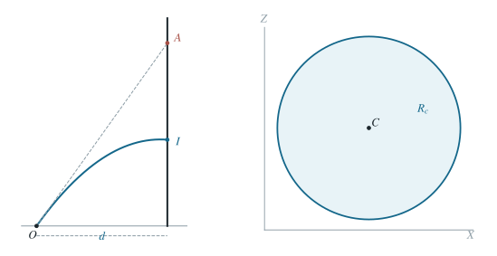

P0040 · 出版物习题 · 原书第 1.05 题
固定初速射击的瞄准点圆域
从枪口瞄准射线和重力下落量推导墙面瞄准点的圆周与圆盘区域。
1 题目
1.1 物理情境
射手在竖直墙前 处的地面上。枪口位置固定，每次射出子弹的初速度大小均为 。
1.2 物理过程
射手改变枪口的方位和仰角。枪口射线与墙面的交点称为“瞄准点”；子弹实际击中墙面的位置因重力作用通常低于瞄准点。
1.3 已知参数和理想化假设
重力加速度为 ，忽略空气阻力和枪口高度；墙足够大，子弹仅在到达墙面时计其击中位置。给定一条离地高度 的墙上水平线。
1.4 求解目标
（1）若子弹恰好击中该水平线，求所有可能瞄准点在墙上的轨迹。（2）若击中位置须高于该线，求瞄准点的区域；指出何时区域为空。

瞄准点在墙上的位置与实际弹着点分开标记。
2 思路与提示
用墙上的瞄准点参数化发射方向；枪口射线长度直接决定到墙的飞行时间。
3 解答展开 / 收起
3.1 用瞄准点坐标参数化发射方向
以枪口为原点，朝墙的法向为 轴，墙上水平向为 轴，竖直向上为 轴。设瞄准点的墙面坐标为 ，则从枪口到瞄准点的位移是 ，其长度
由于子弹沿这条射线以大小 发射，它飞到墙面的时刻为 ：这里所用的是水平方向匀速运动，重力不改变其平面投影。竖直位移则比沿射线匀速前进时少 。因此实际击中高度为
3.2 等高弹着点对应圆周
令 ，两边乘 ，把 的二次项配方，得到
若 ，所求瞄准点轨迹是墙面上以 为圆心、半径 的圆。若 ，圆退化为唯一一个瞄准点；若 ，给定初速根本无法打到该高度。
3.3 高于目标线对应圆盘内部
将式（2）的条件改为 ，配方时不等号方向不变，于是
因此当 时，瞄准点区域是上述圆的开圆盘；等号只命中水平线，不能算作“高于”。当 时，开圆盘为空。实际射击还受墙面有限尺寸和枪口不能朝下等额外条件约束，此处按题设的理想模型讨论。
4 方法与讨论
固定速度的空间斜抛可在墙面用两个坐标参数化。关键不在求每个方向的仰角，而在直接把瞄准射线长度写成飞行时间，随后墙面高度条件自然化为二次曲线。